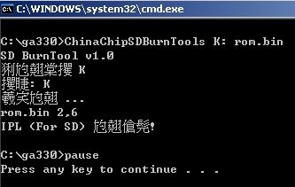
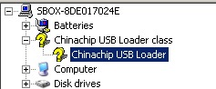
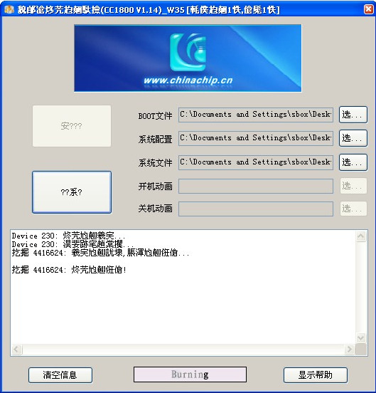
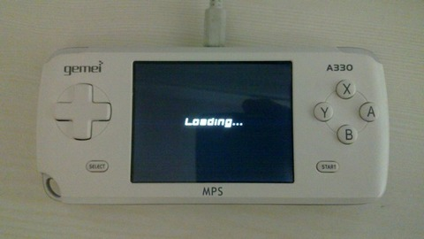

掌機 - Gemei A330 - Unbrick Tool
1. 下載https://github.com/steward-fu/website/releases/download/ga330/sdcard.zip
2. 使用2GB MiniSD(僅支援2GB以下)並執行ChinaChipSDBurnTool.bat(請修改裡面的MiniSD槽號碼)，完成後如下圖：

3. 將完成的MiniSD插到GA330並且按下下按鈕開機
4. 透過USB接到PC並安裝USB驅動，安裝後，必須是如下裝置：

5. 執行UnbrickTool.exe並選擇BOOT(IPL_V1_04.bin)、DL(CN2009P_CFG_A330_LCM_TB_TD030WHEA1_320_240.DL)、Firmware(A330.HXF)，接著按下Burn按鈕燒錄

完成
